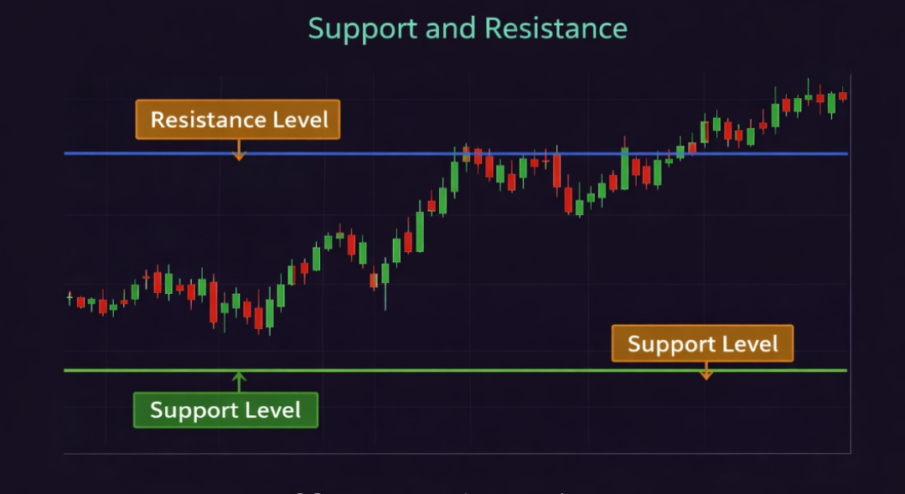
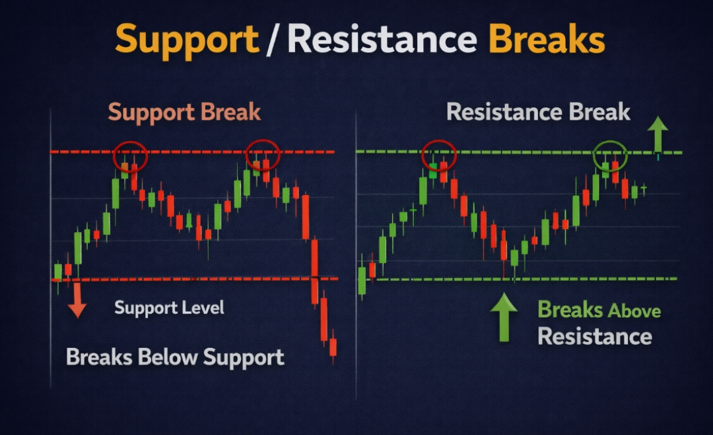

📊 Volume क्या है? (Simple भाषा में)
Volume का मतलब है — एक specific time period में कितने shares buy और sell हुए। अगर किसी stock में एक दिन में 50 लाख shares trade हुए, तो उस दिन का volume 50 लाख है।
Volume को एक crowd की तरह सोचो। अगर बहुत ज्यादा लोग एक direction में move कर रहे हैं तो movement strong है। अगर सिर्फ कुछ लोग हैं तो movement weak हो सकती है।

💡 Golden Rule: Price बताता है "क्या हो रहा है" — Volume बताता है "कितनी conviction के साथ हो रहा है।" एक बिना volume के price move खाली शोर है। Volume के साथ price move = real market action।
Volume क्यों जरूरी है?
- Trend Confirmation: Uptrend में high volume = strong buying। यह confirm करता है trend real है।
- Breakout Validation: High volume breakout = genuine move। Low volume breakout = fake-out trap।
- Smart Money Track करना: Institutions बड़ी quantity में buy/sell करते हैं जो volume spike में दिखता है।
- Reversal Signal: Trend के end में climax volume आता है — यह trend change का early signal होता है।
- Divergence: Price ऊपर जाए और volume घटे — यह weakness दिखाता है, reversal possible है।
📈 Price + Volume Relationship — सबसे Important Concept
Price और volume का relationship volume analysis का core है। ये 4 combinations समझ लो — trading की clarity बहुत बढ़ जाएगी।
सबसे strong bullish signal। Buyers बहुत aggressive हैं। Uptrend continue होने की probability सबसे ज्यादा है। इस setup में buy trades लो।
Price ऊपर जा रहा है लेकिन participation कम है। यह trend exhaustion या temporary bounce हो सकता है। Reversal possible — caution रखो।
सबसे strong bearish signal। Sellers बहुत aggressive हैं। Downtrend continue होने की probability सबसे ज्यादा है। Short trades या exit करो।
Price गिर रहा है लेकिन sellers weak हैं। यह healthy correction हो सकता है uptrend में। अगला bounce strong हो सकता है — watch करो।
💡 Key Insight: सबसे ज्यादा important यह है कि volume और price एक direction में हों — इसे "Volume Confirmation" कहते हैं। जब दोनों aligned नहीं होते, तो move में weakness है।
📊 Best Volume Indicators — Detail में
सिर्फ volume bars देखना enough नहीं है। ये indicators volume को और better तरीके से analyze करने में help करते हैं:
Volume Bars (Basic)
Chart के नीचे दिखने वाले simple bars। Green bar = उस candle में buying ज्यादा। Red bar = selling ज्यादा। Bar जितनी लंबी, उतना ज्यादा participation।
VWAP (Volume Weighted Average Price)
Volume के हिसाब से weighted average price। Intraday का सबसे important level। Institutions इसे benchmark मानते हैं। Price VWAP के ऊपर = bullish bias।
OBV (On Balance Volume)
Cumulative volume indicator। Price rise पर volume add होता है, price fall पर minus होता है। OBV price से पहले diverge करता है — early signal देता है।
Volume Moving Average
20-day average volume। इससे compare करके पता चलता है कि current volume high है या low। Breakout पर 2x average volume = strong signal।
Chaikin Money Flow (CMF)
Accumulation और distribution measure करता है। Positive CMF = buying pressure। Negative CMF = selling pressure। OBV का advanced version।
Volume Profile
Price level पर कितना volume trade हुआ — यह दिखाता है। High Volume Node (HVN) = strong support/resistance। Advanced traders का tool।

⚖️ VWAP — Intraday का Most Powerful Level
VWAP (Volume Weighted Average Price) एक average price होता है जो volume को consider करके calculate होता है। यह सिर्फ एक indicator नहीं — यह institutional traders का benchmark है।
VWAP हर trading day market open होने पर नए सिरे से calculate होना शुरू होता है। यह intraday traders के लिए dynamic support-resistance की तरह काम करता है।
- Price VWAP के ऊपर है: Market bullish है। Buy trades prefer करो। Pullback to VWAP = buy opportunity।
- Price VWAP के नीचे है: Market bearish है। Sell trades prefer करो। Bounce to VWAP = sell opportunity।
- VWAP Breakout: Price strong candle के साथ VWAP को break करे और उसके ऊपर close करे → Strong momentum trade।
- VWAP Rejection: Price VWAP पर आकर reject हो जाए → Trend continuation trade।
- Opening पहले 30 minutes: VWAP establish होने दो। पहले 30 minutes में VWAP trades avoid करो।
📍 Pro Tip: Standard VWAP के साथ ±1 और ±2 Standard Deviation bands use करो। Price ±2 SD band पर आने पर mean reversion की probability बढ़ जाती है। यह advanced VWAP strategy है।
📈 OBV — Price से पहले Signal देने वाला Indicator
OBV (On Balance Volume) एक cumulative indicator है जो यह बताता है कि overall volume किस direction में flow हो रही है। OBV का सबसे powerful use है — price से पहले divergence दिखाना।
Logic: अगर आज की closing price कल से ज्यादा है → आज का volume OBV में add होता है। अगर कम है → आज का volume OBV से minus होता है।
- OBV Rising + Price Rising: Strong uptrend confirmation। Buyers control में हैं।
- OBV Falling + Price Falling: Strong downtrend confirmation। Sellers control में हैं।
- OBV Rising + Price Flat/Falling (Bullish Divergence): Smart money secretly accumulate कर रहा है। Price soon ऊपर जा सकती है।
- OBV Falling + Price Rising (Bearish Divergence): Distribution हो रही है। Price जल्द गिर सकती है। Exit signal।
🔍 OBV Divergence — Hidden Signal: जब stock की price नए highs बना रही हो लेकिन OBV नए highs नहीं बना रहा — यह warning है कि move में strength कम हो रही है। Institutions sell कर रहे हैं retail को। यह bearish divergence होती है।
🔥 Advanced Volume Concepts
Accumulation वह phase है जब smart money (institutions, big traders) quietly किसी stock में buy करते हैं। वे इसे इस तरह करते हैं कि price ज्यादा ऊपर न जाए — ताकि retail traders को पता न चले।
Accumulation को कैसे पहचानें:
- Stock एक tight range में trade कर रहा है — कोई बड़ा move नहीं
- Range में volume gradually increase हो रही है
- Price support level पर बार-बार bounce कर रहा है लेकिन crash नहीं हो रहा
- OBV quietly ऊपर जा रहा है जबकि price flat है (bullish divergence)
- Dips पर volume high होती है (institutions buy कर रहे हैं)
✅ Trading Opportunity: Accumulation phase identify करो → Wait करो जब तक price breakout न करे high volume के साथ → फिर entry लो। यह swing trading का सबसे powerful setup है।
Distribution वह phase है जब institutions और smart money धीरे-धीरे अपनी position sell करते हैं। यह अक्सर तब होता है जब retail traders excited होते हैं और FOMO में buy कर रहे होते हैं।
Distribution को कैसे पहचानें:
- Stock ऊपर गया है और अब एक range में chop कर रहा है
- Range में volume high है लेकिन price ऊपर नहीं जा रहा (sellers हर ऊंचाई पर sell कर रहे हैं)
- Rallies पर volume कम होती है (buying weak है)
- OBV गिरने लगता है जबकि price still high है (bearish divergence)
- News और positive sentiment के बावजूद stock ऊपर नहीं जाता
⚠️ Warning Signal: अगर तुम किसी stock में excited हो और सब "bullish" बात कर रहे हैं लेकिन OBV गिर रहा है और volume pattern distribution दिखा रहा है — यह exit signal है, entry नहीं।
Volume Climax तब होता है जब volume extremely high हो जाती है — average से 5x, 10x या उससे भी ज्यादा। यह panic selling या euphoric buying का result होता है।
- Buying Climax: Stock तेजी से ऊपर जाए, extreme high volume आए → Price अगले दिन reverse हो जाए। यह sellers का "trap" है जो buyers को catch out करता है।
- Selling Climax: Stock crash में extreme high volume पर एक big red candle → अगले दिन bounce। यह buyers का opportunity है — smart money "load up" कर रहा है।
- Climax candle के बाद अक्सर consolidation या reversal आती है — trend continuation rarely होता है।
🚀 Volume Breakout Strategy — Complete System
Volume breakout strategy trading की सबसे reliable और beginner-friendly strategies में से एक है। इसे सही से use करने पर fake breakouts 80% तक avoid हो जाते हैं।
Key Resistance Level Identify करो
Daily या Weekly chart पर एक important resistance level mark करो — जहाँ price कई बार reject हुई हो। यह multiple timeframe पर visible होनी चाहिए।
Average Volume Calculate करो
Stock की 20-day average daily volume note करो। यह आपका benchmark है। Breakout के दिन volume इससे कम से कम 1.5x–2x ज्यादा होनी चाहिए।
Breakout Candle Wait करो
Price resistance को touch करे — immediately entry मत लो। Wait करो कि candle resistance के ऊपर close करे। Closing confirmation = genuine breakout।
Volume Confirm करो
Breakout candle की volume check करो। Average से 2x+ volume? → Strong breakout। Average से कम volume? → Possible fake breakout। Wait करो।
Entry, SL और Target Set करो
Breakout candle close पर या next day market open पर entry। Stop Loss: Resistance level के नीचे (3-5%)। Target: Measured move या next key level।
Retest Entry (Safer Option)
Breakout के बाद price resistance पर pullback करके retest करे → Volume कम हो और price hold करे → यहाँ entry और safer होती है। Stop Loss previous resistance के नीचे।
🚨 Fake Breakout पहचानना — Volume से
Fake breakout trading में सबसे common trap है। Volume analysis से आप 80%+ fake breakouts avoid कर सकते हो।
| Feature | ✅ Real Breakout | ❌ Fake Breakout |
|---|---|---|
| Volume | Average से 2x+ ज्यादा | Average से कम या equal |
| Candle Close | Resistance के clearly ऊपर | Resistance के पास या barely ऊपर |
| Next Day | Price hold करती है या ऊपर जाती है | Price वापस resistance के नीचे |
| OBV | OBV नया high बनाता है | OBV flat या नीचे |
| Candle Body | Large body, small wick | Small body, large upper wick |
| Market Sentiment | Sector और index support करते हैं | Stock अकेले move कर रहा है |
📊 Real Life Examples — Volume in Action
Situation: Reliance 2,500 पर strong resistance था। Stock 3 महीने से इस level को break करने की कोशिश कर रहा था।
- Monday: Price 2,480 → 2,490 → Volume average (normal day)
- Tuesday: Price 2,510 पर strong close। Volume = Average का 3x! → Real Breakout Signal
- OBV: नया 3-month high बना → Confirmation
- Wednesday: Price 2,520 पर hold किया। Retest entry opportunity।
- Entry: 2,520 पर | SL: 2,490 | Target: 2,650
- Result: 2 हफ्ते में 2,650 reached। Profit ✅
✅ Volume ने confirm किया कि यह real breakout है। बिना volume के यह entry नहीं लेते।
Situation: एक midcap stock 500 की resistance break करता है। Retail traders excited होकर buy कर लेते हैं।
- Breakout candle: Price 505 पर close। लेकिन volume = Average का सिर्फ 0.6x (बहुत कम!)
- OBV: नया high नहीं बना — flat रहा
- अगले दिन: Price वापस 490 पर। Fake breakout confirmed।
- जो volume check नहीं किया: 505 पर buy किया → 490 पर stop hit → Loss
- जो volume check किया: Volume कम देखकर wait किया → Saved from fake breakout ✅
⚠️ Lesson: Volume confirmation skip करना = fake breakout में फँसने का सबसे बड़ा reason। हर breakout पर volume check mandatory है।

🧠 Volume और Market Psychology
Volume असल में market participants की emotions और actions को reflect करता है। इसे समझना professional trading की एक key skill है।
Panic Selling Volume
Market crash में extreme high volume के साथ big red candles → Retail panic में sell कर रहे हैं। Smart money यहाँ buy करता है। Selling climax = potential bottom।
FOMO Buying Volume
Bull run में extreme high volume के साथ big green candles। Retail FOMO में buy कर रहे हैं। Smart money यहाँ sell करता है। Buying climax = potential top।
Low Volume Sideways
Market range में low volume के साथ consolidate कर रहा है। कोई conviction नहीं। Breakout का wait करो — जब volume आएगी तभी direction clear होगी।
Institutional Volume
Suddenly normal से 3x-5x volume आए लेकिन price ज्यादा move न करे → Institutions accumulate कर रहे हैं। यह powerful bullish signal है आने वाले हफ्तों के लिए।
⚠️ Volume Analysis में Common Mistakes
Volume बिल्कुल Ignore करना
सबसे बड़ी गलती। बहुत से traders सिर्फ price देखते हैं और volume को ignore करते हैं। इससे fake breakouts में फँसना और real moves miss करना — दोनों होते हैं। Volume को price analysis का mandatory part बनाओ।
Context के बिना Volume देखना
हर high volume candle same नहीं होती। High volume on support = bullish। High volume on resistance = bearish। High volume at top = distribution। Context देखे बिना सिर्फ "volume high है तो buy" — यह गलत है।
Absolute Volume vs Relative Volume Confusion
एक stock में हमेशा ज्यादा volume होती है और दूसरे में कम — यह उनका nature है। हमेशा stock की अपनी average volume से compare करो। Infosys में 50 लाख volume "high" हो सकती है, SBI में 50 लाख "low" हो सकती है।
Low Volume Days में Trading करना
Public holidays के आसपास, month end, या expiry के दिनों में volume कम होती है। Low volume markets में price manipulation आसान होती है और false signals ज्यादा आते हैं। इन दिनों trading कम करो।
Single Indicator पर Depend करना
सिर्फ OBV या सिर्फ VWAP पर dependent रहना। Volume analysis को candlestick patterns, support-resistance और trend के साथ combine करने पर accuracy बढ़ती है। Single indicator = limited view।
❓ Frequently Asked Questions
Volume analysis सीखने के लिए कहाँ से शुरू करें?
पहले basic price-volume relationship के 4 combinations याद करो। फिर अपने trading platform पर daily charts open करके volume bars observe करो — देखो कि big volume candles कहाँ आ रहे हैं। इसके बाद OBV indicator add करो और price के साथ compare करो। धीरे-धीरे VWAP intraday charts पर practice करो। यह practical approach सबसे effective है।
VWAP और Moving Average में क्या difference है?
Moving Average सिर्फ price का average होता है — volume को consider नहीं करता। VWAP price का volume-weighted average है — यानी जिन levels पर ज्यादा trading हुई उन्हें ज्यादा weight मिलता है। VWAP intraday trading के लिए ज्यादा accurate है क्योंकि यह actual trading activity reflect करता है। Moving Average swing और long-term trading के लिए better है।
OBV divergence कब reliable होती है?
OBV divergence तब ज्यादा reliable होती है जब: (1) यह major support या resistance level पर हो, (2) Divergence कम से कम 2-4 हफ्ते की हो, (3) Price एक clear trend में हो, (4) OBV divergence के साथ candlestick reversal pattern भी हो। Single divergence पर blindly trade नहीं करते — confirmation जरूरी है।
Breakout पर कितनी volume होनी चाहिए?
Minimum standard यह है कि breakout की volume उस stock की 20-day average daily volume से कम से कम 1.5x–2x ज्यादा हो। Strong breakouts में यह 3x–5x तक होती है। अगर volume average से कम है या average के बराबर है, तो breakout को doubtful मानो और confirmation का wait करो।
Accumulation और Distribution phase कितने समय तक चलता है?
यह stock और market conditions पर depend करता है। Large cap stocks में accumulation weeks से महीनों तक चल सकती है। Midcap stocks में यह faster हो सकता है। Important बात यह है कि जल्दबाजी नहीं करनी — जब तक clear volume breakout या breakdown न हो, wait करो। Patience यहाँ सबसे ज्यादा जरूरी है।
NSE/BSE पर volume data कहाँ देखें?
Volume data सभी major trading platforms पर available है — Zerodha Kite, Upstox, Angel One, TradingView। NSE की official website (nseindia.com) पर free में volume data मिलता है। TradingView पर OBV और Volume indicators free में add कर सकते हो। screener.in पर stocks को volume spike के basis पर filter भी कर सकते हो।
📊 Virtual Trading में Volume Practice शुरू करो — Free
Theory पढ़ लिया — अब BullBear Market पर virtual trading में volume analysis practice करो। Real market charts, zero risk, असली learning।